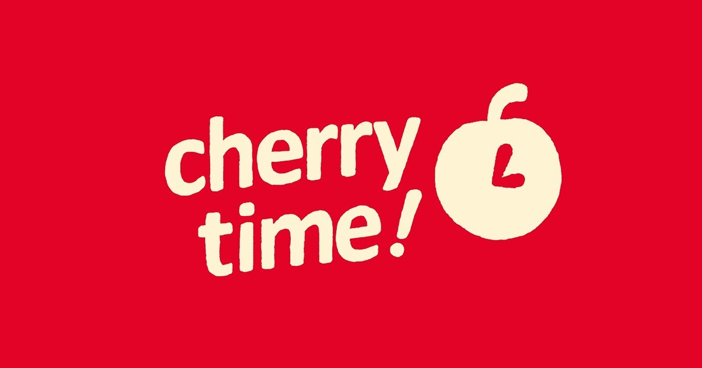

Team Cherry breaks its silence — Cherry Time! lands Friday with a Sea of Sorrow update
Team Cherry announced Cherry Time!, a special presentation streaming Friday, November 27 at 10 a.m. ET, promising 'a bunch of exciting announcements' plus the first real update on Hollow Knight: Silksong's free Sea of Sorrow expansion.

Team Cherry has posted. The Hollow Knight: Silksong developer announced on November 25 that it will hold a special presentation called Cherry Time! on Friday, November 27 — its first showcase-style broadcast — and the headline item is an update on Sea of Sorrow, the free story expansion for Silksong.
The broadcast premieres on Team Cherry's YouTube channel at 7 a.m. PT / 10 a.m. ET / 3 p.m. GMT. The studio's announcement promises "a bunch of exciting announcements" alongside the Sea of Sorrow update, and says to join in 48 hours.
What we know about Sea of Sorrow
Sea of Sorrow is the free story expansion for Hollow Knight: Silksong. It was teased late last year with a 2026 release window attached, and Team Cherry's own description of it is short and cryptic: "Voyage across and beneath the salt-stricken seas in this thrilling expansion, free for all players." There is still no firm release date — and that's exactly what Friday's presentation is expected to address, one way or another.
The physical edition of Silksong describes Sea of Sorrow as a "giant expansion" and still carries the 2026 window, so the question hanging over Cherry Time! is whether that window holds, slips, or turns into a surprise drop. The studio has said nothing beyond the announcement itself, and has not disclosed what the other announcements in the broadcast will be.
Why this one matters
Team Cherry almost never does this. The studio communicates in long silences broken by sudden drops, and a scheduled showcase with a named time is a break from that pattern — which is why the Silksong community treats any Team Cherry post like a weather event. Friday at 10 a.m. ET is when we find out whether Sea of Sorrow lands in 2026, what it actually looks like, and what else the studio has been quietly building.
Sources: Hollow Knight: Silksong DLC News Is Coming This Week In A Team Cherry 'Special Presentation' (Nintendo Life) · Team Cherry to share Hollow Knight: Silksong - Sea of Sorrow details Friday (Shacknews) · Hollow Knight Developer Team Cherry To Air Special Presentation Featuring Silksong DLC News And More (Game Informer) · Cherry Time! broadcast set for November 27 featuring "exciting announcements" and Hollow Knight: Silksong free expansion 'Sea of Sorrow' (Gematsu)
Gear up: Razer — mice, keyboards, headsets and laptops.